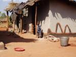
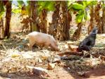
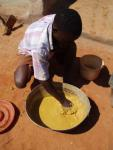
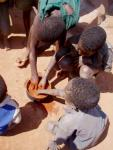

Yesterday was an absolutely increadible day. It was a I'm-so-glad-I'm-in-Malawi day.
Earlier last week Jon received a text message on his cell from a mysterious sender saying, "Hie Marissa - paintlady says be there Saturday26Aug". Which painter lady? Lilongwe or Mzuzu? Who sent this? I had so many questions, but we were hystarical with laughter because this baffled, utterly confused feeling has become such a part of life.
Eventually we found out that it was Isaac, a friend's housekeeper and my translator for art visits out to the villages. What a sweet person! He had set up a meeting for me to visit a family who paint murals on their house. This would be my second visit, this time I was hoping to learn how they make their paints and conceive their designs.
At 9am on saturday morning we exited the university walls and walked out into rural Malawi village life. It only took 5-10 minutes to arrive at their house, but I was surprised how far into the bush it felt and how small things put me into culture shock...like how sickly their malnutritioned neighbor's child looked, the father's intimate knowledge of the land, the pigglet sniffing and snorting at my feet, and a meal of dirty boiled banannas for lunch. My "city" life in Mzuzu, only a mile away, is just so different.
I'm writing about this now, just after watching, “True Hollywood Story” about the Hilton sisters. We have DSTV for a few days at the new house we are watching. At this moment, I can't fathom how it is possible that we are all living in the same world at the same point in time. I do feel like I'm on another planet in another gallaxy.
Anyway, back to my story... after the usual 45 minutes of waiting for someone to show up, or something to happen, the father arrived and greeted us with somewhat guarded enthusiasm. We took off for the dambo (river) to collect soils for paint making. His youngest son with, hoe in hand, trotted ahead as we weaved through houses, past the market stand, and through cultivated fields. We were in the getle valley of the dambo, a sea of green on ashen soil. The father came to an abrupt stop in the middle of the fertile moon-like landscape and began to dig, swinging up, over, and down with the grace and force of gravity. Soon the land below revealed a precious yellow soil. It was unbelievable how it hid so inconspicuously under that thick blanket of grey. It was a deep musty yellow, not all that special to the naked eye, but we had been here once before. On a previous visit, with a handful of soil and a quick dip in a water hole, the most vibrant golden yellow spilled from between his fingers and bled into the water making the whole pool a reflection of its hidden beauty.
We all started back for the house to mix paint and transform walls. When we arrived the oldest daughter was brewing up a concoction of charcoal powder (makhala, pronounced ma-k-ha-ra), corn flour (ufa, oo-fa) and water (magi, ma-gee) on an open fire. The corn flour serves as the binder, helping the charcoal and water molecules stick to one another creating a solid, fluid color. I had read that any starch could serve this purpose (corn flour, wheat flour, casava flour, etc) and here was a family "way out" in the bush who have been doing this for generations.

The other pigments (our precious yellow soil, typical Malawian red soil, and an interesting mix of light grey soil with expired, dried-up blue paint) would only need a little water. The mixing was the best part...litterally playing in the mud!!
The father is the main artist, but acording ot Isaac, my translator, the tradition comes from the mother's side of the family. He started working on the wall next to the front door. A thick diamond checkered border at the base with all 4 colors and a giant abstract flower bursting from a flower pot. He was using a nail to scratch outlines on the mud wall and a brush made from a reed-like grass off his thatched roof. Another thing I had read about! Natural brushes can be made by chewing on the ends of certain sticks and thick grasses to separate the fibers into bristles.

We all jumped-in to help on the larger wall and I showed the kids how we could mix the blue and yellow to make green. I'm amazed how I take basic color mixing for granted...it's just not a skill people learn at home or at school around here. The little boys painted a running man with our new green while I had some fun on their grain storage structure to paint a flower of my own...Isaac finishing off the final details.
It was a beautiful day. I hope to visit again!
 Recent Posts
Recent Posts